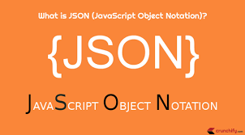

Historia de JSON
JSON (JavaScript Object Notation) es un formato de intercambio de datos ligero y fácil de leer y escribir.
Fue creado por Douglas Crockford en la década de 2000 como una alternativa a XML.
JSON se basa en la sintaxis de los objetos de JavaScript, lo que lo hace muy familiar para los desarrolladores web.
Normas de uso y sintaxis de JSON
JSON se utiliza para representar datos estructurados en forma de pares clave-valor.
Los datos en JSON se organizan en objetos (encerrados entre llaves {}) y arrays (encerrados entre corchetes []).
La sintaxis básica de JSON incluye pares clave-valor separados por dos puntos (:), y los elementos separados por comas (,).
Aplicaciones de JSON en el ámbito empresarial
JSON se utiliza ampliamente en el intercambio de datos entre aplicaciones y servicios web.
Es especialmente popular en el desarrollo de aplicaciones web y móviles, ya que es fácil de parsear y manipular en lenguajes como JavaScript.